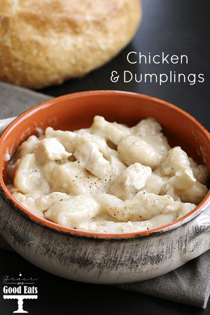

Homemade Dumplings

Description
These boiled drop dumplings, which are popular in the U.S., are often paired with chicken and
broth to create a popular comfort food called chicken and dumplings.
Ingredient
- 1 cup all-purpose flour
- 2 teaspoons baking powder
- 1 teaspoon white sugar
- 1/2 teaspoon salt
- 1 tablespoon margarine
- 1/2 cup milk
Steps
- Stir together flour, baking powder, sugar, and salt in a bowl
- Cut in butter until mixture is crumbly. Stir in milk and mix until a batter forms that is thick enough to be scooped with a spoon.
Allow batter to rest for 3 to 5 minutes.
- Drop batter by spoonfuls into boiling stew or soup. Cover and simmer without lifting the lid for 15 minutes. Serve.
- Serve hot and enjoy!